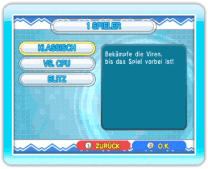
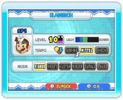
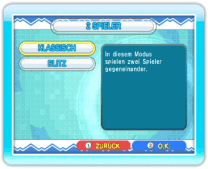
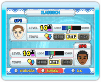

14 |
Einzelspieler-/ Zweispielermodus (Dr. Mario)
|
 |
 
● 1 Spieler In diesem Modus spielst du Dr. Mario allein. Wähle 1 SPIELER auf dem Dr. Mario-Menübildschirm, um den 1-Spieler-Auswahlbildschirm anzuzeigen. Hier kannst du dich zwischen KLASSISCH, VS. CPU oder BLITZ entscheiden. Wähle einen Modus aus, um den Einstellungsbildschirm aufzurufen. Nun kannst du den LEVEL (Anzahl der Viren), das TEMPO (Geschwindigkeit, mit der die Kapseln fallen) und die MUSIK festlegen. Wenn du deine Wahl getroffen hast, kann das Spiel beginnen. Hinweis: Wenn du den Vs. CPU- oder  
● 2 Spieler In diesem Modus kannst du Dr. Mario mit einem Freund spielen. Wähle 2 SPIELER auf dem Dr. Mario-Menübildschirm, um den 2-Spieler-Auswahlbildschirm anzuzeigen. Hier sind die Varianten KLASSISCH und BLITZ verfügbar. Nachdem ihr euch für eine Variante entschieden habt, könnt ihr die Einstellungen verändern. Durch Drücken von Am Ende des Spiels wird der Ergebnisbildschirm angezeigt. Spieler 1 kann nun das Spiel NOCHMAL spielen oder ENDE wählen, um es zu beenden. Hinweis: Um im Zweispielermodus zu spielen, muss ein zweiter Controller an die Wii-Konsole angeschlossen sein. |
 können auch die Miis gewechselt werden. Sobald Spieler 1 die Musik gewählt hat, beginnt das Duell.
können auch die Miis gewechselt werden. Sobald Spieler 1 die Musik gewählt hat, beginnt das Duell. |
 |
 |